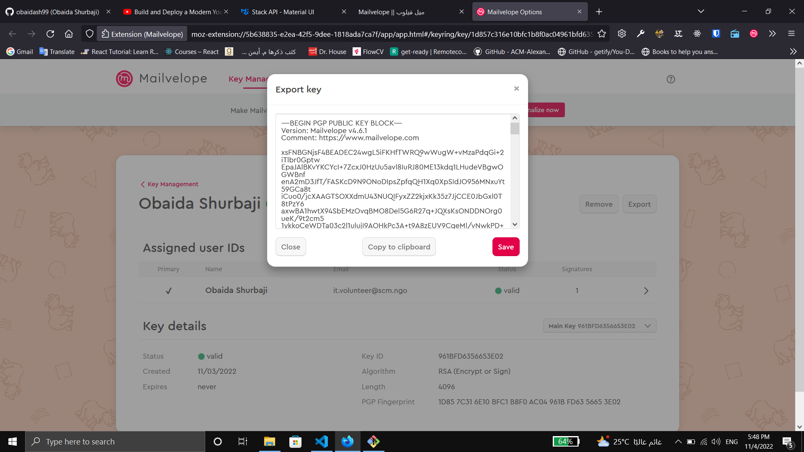
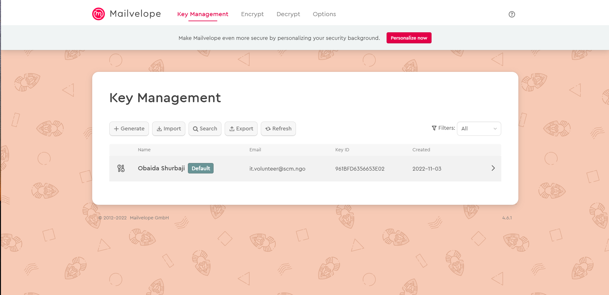

Mailvelope || ميل فيلوب
الاسم: ميل فيلوب
المهمة: تشفير الايميلات والمرفقات
يعمل على المتصفحات التالية: فايرفوكس، جوجل كروم، ومايكروسوفت إيدج
الثمن: مجاني
كيف يعمل؟
بسبب أهمية المراسلات والايميلات التي نقوم بها بشكل يومي، وجب علينا حماية البيانات من الخطر. هنا جاء دور إضافة الميل فيلوب، وهي إضافة لمتصفح الانترنت مثل كروم وفايرفوكس تتيح لنا الإضافة تشفير الايميلات المرسلة من قبلنا بمفاتيح تشفير ومفاتيح فك تشفير نقوم بمشاركتها مع الجهة المستقبلة
يمتاز الميل فيلوب بالتالي:
يمكن من خلاله إرسال ملفات مرفقة داخل الإيميل، يقوم بتشفيرها بشكل تلقائي ويتم فك التشفير عنها عن طريق رمز أو مفتاح خاص. لا يقدم الإيميل العادي هذه الخدمة حيث يرفض إرسال ملفات مشفرة مسبقاَ; بمعنى: لو قمنا بتشفير ملف عن طريق برنامج فيرا كريب لا يقبل الإيميل أن يرسله إلا إذا أرسلناه بغير تشفير
يتكون هذا الدليل من ثلاثة أقسام رئيسية :
1- إضافة الميل فيلوب إلى المتصفح:
-
الحصول على التطبيق:
- لجميع المتصفحات نضغط هنا
-
تظهر الصفحة التالية، نقوم بالضغط على "Download Mailvelope"

- تظهر الصفحة التالية، نضغط على "إضافة إلى Chrome"
- تظهر النافذة التالية، نضغط على "Add Ectension"

- نضغط على الإشارة في شريط المهام أعلى يمين المتصفح، كما الصورة: تظهر النافذة التالية، نقوم بتثيبيت الإضافة في شريط المهام عن طريق الضغط على صورة الدبوس.
- يظهر لوجو الميل فيلوب في شريط المهام بعد تثبيته، نضغط عليه لتظهر النافذة التالية: نصغط على "Let's
start"
- تظهر الصفحة التالية، نضغط على "Generate Key" لإنشاء كوود التشفير الخاص بالإيميل الحالي:
-
نقوم بإدخال البيانات الشخصية كالتالي:
- الاسم كاملاَ
- البريد الالكتروني الذي نريد إرسال ايميلات مشفرة عن طريقه
- إنشاء كلمة مرور خاصة بكود التشفير، يجب تذكرها جيداَ لأنها غير قابلة للاسترجاع
- إعادة كتابة كلمة المرور للتأكيد
- تظهر النافذة التالية وتعني أنه يتم إنشاء كود التشفير الخاص بالإيميل:
 بعد أن تنتهي النافذة في الخطوة السابقة، تظهر الصفحة التالية وتحتوي على كود التشفير، ومعلومات الحساب التي
سبق إدخالها
بعد أن تنتهي النافذة في الخطوة السابقة، تظهر الصفحة التالية وتحتوي على كود التشفير، ومعلومات الحساب التي
سبق إدخالها - من نفس الصفحة نقوم بالضفط على خيار "Options" من شريط المهام، تظهر الصفحة التالية
- نضغط على "Key Directories"
- نقوم بإلغاء الخيارين الأول والثاني في القائمة الأولى كما هو موضح في الصورة
-
من شريط المهام، نضغط على "Key Management": ثم نضغط على السهم بجانب معلومات الحساب كما هو موضح في
الصورة
- تظهر الصفحة التالية: نضغط على "Export" لنقوم بتصدير أو إرسال كود التشفير الخاص بنا لجهات
الاتصال التي نريد استقبال أو إرسال إيميلات مشفرة لهم
-
نقوم بنسخ الكود الظاهر في النافذة التالية، ونرسله إلى جهات الاتصال
 - لتسجيل أو إضافة كود تشفير خاص بأحد جهات الاتصال نقوم بفتح قائمة "Key Management" من شريط المهام: ثم
نضغط على "Import"

- تفتح الصفحة التالية، وتحتوي على قسمين كالتالي:
- لإضافة الملف الذي يحتوي على كود التشفير الخاص بأحد جهات الاتصال
- لنسخ كود التشفير في المكان المخصص
- نختار الطريقة المناسبة ثم نضغط على "Import Keys" لإتمام إضافة الكود
- تظهر النافذة التالية وتحتوي على معلومات جهة الاتصال التي تم إضافة كود التشفير الخاص بها. نضغط على
"Confirm"
-
لإرسال إيميل مشفر عن طريق الميل فيلوب، ندخل على الإيميل الخاص بنا كالتالي:
- نفتح نافذة الـ"Mail"
- نضغط على اللوجو
- يقوم المتصفح بتحويلنا إلى الصفحة التالية، نقوم بتسجيل الدخول إلى الحساب الذي سبق وأدخلناه إلى الميل
فيلب
- نختار الإيميل من القائمة التالية ونسجل الدخول عن طريقه:
- نضغط على "Allow" للسماح للميل فيلوب بالوصول إلى الإيميل:
